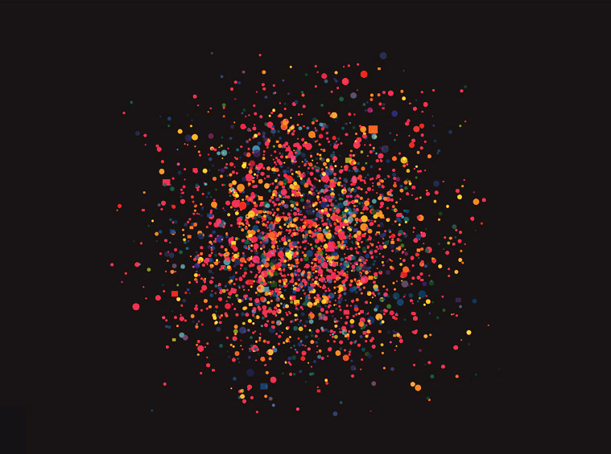

Chapter 5 데이터 시각화
5.1 데이터 시각화
5.1.1 데이터 시각화의 개념
- 데이터 시각화는 그리 낯설지 않게 주변에서 접할 수 있음
- 각 매체를 통해 공개되는 각 지역구별 당선자의 소속 정당 분포, 환율의 변동 그래프, 특정 사회적 이슈에 대한 성별 인식차를 시각적으로 보여 주는 막대 그래프나 파이차트 등
- 데이터 시각화의 목적은 데이터를 직접 일일이 보지 않고도 정보를 명확하고 효과적으로 전달하는 것
- 데이터에 내재된 경향이나 분석결과를 쉽게 이해할 수 있도록 시각적으로 표현하고 전달하는 과정이 필요함
- 데이터를 이해하고 탐색, 전달하는 가장 손쉬운 방법은 시각화(visualization)
- 자료의 수치와 특성을 도형의 크기, 모양 및 색상으로 변환하여 보는 이들이 패턴을 찾도록 하는 것
- 데이터 시각화를 통한 자료의 이해가 전문적인 통계방법을 통한 이해에 비해 빠르고 효과적임
- 방대한 빅데이터 안에서 통찰력(insight)을 얻기 위한 시각화 서비스가 필수적임
- 데이터 시각화는 빅데이터 활용의 중요한 전처리 단계라고 볼 수 있음
5.1.2 데이터 시각화의 목적 및 효과
데이터 시각화는 데이터 분석과 의사소통이라는 두 가지 목적을 가지고 있음
데이터 시각화는 스토리를 발견하고 이해하는 강력한 도구 역할을 함
- 데이터 시각화를 통해 자료에서 얻은 스토리를 이해하고, 이를 다른 사람과 공유함으로써 그 스토리를 널리 활용하고 발전시킴
데이터를 시각화함으로써 얻을 수 있는 효과는 즉각적이며 다양함
- 가장 중요한 효과는 자료를 통한 정보 습득 시간을 절감할 수 있음 - 즉각적인 상황 판단
- 사람들의 흥미를 유발하고 정보의 빠른 확산을 견인함
- 데이터를 시각화하면 자료를 기억하기 쉬워짐
맥캔들리스(David McCandless)가 묘사한 ‘시각적 이해의 위계도’

각각 분리된 자료인 데이터는 데이터 간의 연결고리를 찾아서 관계가 생성될 때 비로소 정보가 됨
축적된 총체적인 정보가 조직적으로 재구성되어 도출된 새로운 의미로 전환되어 지식이 됨
지혜는 여러 가지 지식이 개인의 경험, 사고, 감정체계와 결합되어 관계를 맺고 구조화되어 나타남
- 지혜는 개인화한 지식으로 볼 수 있음
빅데이터를 효과적으로 시각화하기 위해서는 데이터, 정보, 지식, 지혜의 위계를 파악하고 이를 고려한 시각화 방안을 습득해야 함
5.1.3 시각화의 분류와 구분
5.1.3.1 데이터 시각화
- 좁은 의미의 데이터 시각화(data visualization)란 데이터 자체의 시각적 표현의 연구 영역을 의미
- 도식적인 형태 안에 추상적 혹은 정량적으로 표현된 속성(attributes)이나 변수(variables)를 포함한 정보를 뜻함
- 데이터 시각화의 주요 목적은 그래픽을 이용해 명확하고 효과적으로 정보를 전달, 교감하는 것
- 주로 원 데이터(raw data)를 가지고 아이디어를 효과적으로 전달하기 위한 직접적인 관점을 제공
- 대부분 변수나 자료들의 연결과 그룹화를 표현하는 데 초점을 두며 마인드맵, 뉴스맵, 데이터 표현, 관계 표현 등을 꼽을 수 있음
- 모바일 기업 간 소송 관계를 표현한 데이터 시각화
[https://bits.blogs.nytimes.com/2010/03/04/an-explosion-of-mobile-patent-lawsuits]
5.1.3.2 정보 시각화
정보 시각화(information visualization)란 소프트웨어 시스템, 라이브러리, 서지 데이터베이스에서 코드의 라인들과 같은 비수치 정보, 인터넷의 네트워크 관계 등 큰 범위의 집합에 대한 시각적 표현방법의 연구 영역임
대규모의 비수량 정보를 시각적으로 표현하는 것
- 사용자가 방대한 양의 정보를 한 번에 탐색하고 이해하도록 시각적 표현방법과 인터랙션 기술을 이용해 추상적 정보를 직관적으로 전달하기 위한 접근방법 창조에 초점을 맞추고 있음
- HCI(Human-computer interaction), 컴퓨터공학, 그래픽, 시각디자인, 심리학, 비즈니스 방법론 등의 연구 영역으로부터 발전햇으며, 과학적 연구, 디지털 라이브러리, 데이터마이닝, 금융 데이터 분석, 시장조사, 제품생산 컨드롤, 약품개발 등 많은 분야에 적용되고 있음
정보 시각화 분야는 데이터 시각화 분야보다 한 단계 더 높은 정보 형태로 가공과정을 거치며, 트리맵 또는 히트맵 등의 다양한 그래프를 통해 표현됨
5.1.3.3 정보 디자인
정보 디자인(information design)은 사람이 사용할 수 있는 효과적인 정보와 복잡하고 비구조적인 기술 데이터를 시각적으로 표현하는 방법임
넓은 의미로는 앞서 설명한 데이터 시각화, 정보 시각화도 정보 디자인에 속하며, 정보, 데이터 또는 지식 등 그래픽 정보 표현방법이 많이 적용되는 인포그래픽 역시 정보 디자인의 한 유형임
역사적으로 유명하며 의미 있는 정보 디자인의 예로는 1861년 프랑스의 공학자 미나르(Charles Minard)가 작성한 다이어그램이 있음

- 1812년 나폴레옹군의 러시아 원정 시 진군에서 후퇴하기까지의 과정 중에 나타난 이동경로별 추위, 병사들의 감소 수를 보여 주는 그래프로서 러시아 원정 전체에 대한 스토리를 한눈에 파악할 수 있음
5.1.3.4 인포그래픽
인포그래픽(information graphics, infographic)은 복잡한 데이터, 정보, 지식을 빠르고 명확하게 이해할 수 있도록 제작된 시각적 표현법임
인포그래픽은 데이터 시각화와는 확연히 구분될 정도로 원 데이터를 드러내지 않는 대신에 실용적으로 전달하기 위해 단순화한 다양한 차트, 다이어그램, 일러스트레이션을 적극적으로 사용함
- 인포그래픽의 그래픽들은 복잡한 정보를 빠르고 명확하게 표현하기 위해 표지판, 저널리즘, 테크니컬 라이팅, 교육과 같은 분야에서 발전해 온 시각화 분야
정보 사용의 목적과 관점에 따라 ’정보형 메시지’와 ’설득형 메시지’로 구분
- 정보형 메시지 예: 지하철 노선도
- 설득형 메시지: 2014년 이스라엘의 가자지구 공습에 의한 민간인 희생자(https://www.washingtonpost.com/wp-srv/special/world/gaza-counter/)
5.2 데이터 시각화 구현
5.2.1 시각화 프로세스
데이터 과학자는 데이터 시각화를 위한 프로세스 이해 및 시각화 구현기법을 익히는 것이 중요함
벤 프라이(Ben Fry)는 저서 “Visualizing Data”에서 빅데이터 시각화를 위한 7단계를 제시함
획득(acquire): 파일, 디스크, 혹은 네트워크 등의 다양한 소스로부터 정보를 수집하는 과정
분해(parse): 정보의 의미를 바탕으로 구조를 주고 이를 카테고리화하는 과정
선별(filter): 선행과정을 바탕으로 의미 있는 정보와 의미 없는 정보를 구분하여 필요 없는 정보를 제거하는 과정
마이닝(mining): 통계기법 혹은 데이터마이닝 기법을 활용하여 데이터로부터 패턴을 인식하거나 수리적 연관성을 찾아내는 과정
표현(represent): 패턴과 연관성을 기초적인 시각화 도구(막대그래프, 트리 등)를 활용하여 표현하는 과정
정제(refine): 더 명확하고 설득력 있는 의미 전달을 위해 전 단계의 기초적인 시각화 결과물을 시각적으로 정제하는 과정
상호작용(interact): 앞 단계에서 얻은 정보를 다양한 시각에서 변형, 재탐색할 수 있는 방법을 반영하는 과정
대부분의 경우 위의 7단계로 세분화하여 작업하기는 힘들며, 이를 일반적인 빅데이터 시각화 과정에 맞추어 다음과 같이 빅데이터 시각화 프로세스로 제공함
빅데이터 시각화 프로세스: 데이터 분석 전문가 가이드
| 단계 | 단계 설명 |
|---|---|
| 정보 구조화 | 데이터를 수집하고 정제하는 과정으로 데이터 세트를 만들기 위한 분석도구 필요 |
| 정보 시각화 | 주로 분석도구에서 제공하는 그래프나 분석도구의 특성에 따른 시각화 |
| 정보 시각표현 | 시각화의 의도를 강화해서 전달하기 위하여 분석도구에서 만든 결과물에 별도 그래픽 요소를 추가해 완성 |
1단계 정보 구조화 단계: 빅데이터에서 제공하는 데이터를 가지고 밑작업을 하면서 시각화의 목표 및 재료가 될 만한 것들을 발견하고 설정
2단계 정보 시각화 단계: 시각화 도구를 이용하여 1단계에서 발견하고 구조화한 정보를 시각화에 필요한 그래프 등으로 시각화의 기본 틀을 잡음
시각화 도구 구분: 데이터 분석 전문가 가이드
| 수준 종류별 구분 | 시각화 도구 |
|---|---|
| 기초 수준 | ExCEL, CSV/JSON, Google chart API, Flot, Raphael, D3(Data Driven-Documents), Visual.ly |
| 인터랙티브 GUI 컨트롤 | Crossfilter, Tangle |
| 매핑 | Modest Maps, Leaflet, Polymaps, OpenLayers, Kartograph, CartoDB |
| 전문가 | Processing, NodeBo, R, Python, Weka, Gephi |
- 3단계 정보 시각표현: 최종적으로 시각적인 완성을 하는 단계로, 어도비 일러스트레이터(Adobe Illustrator) 혹은 코렐드로(CorelDraw) 등 전문 그래픽 도구를 활용하며, 인터랙티브 디자인 방법을 습득하여 구현해야 함
5.2.2 시각화의 다양한 기법
- 정보 시각화 방법은 분석도구와 함께 제공되는 시각화 도구에 의해 결정되는 경향이 강함
- 대부분의 시각화 도구에서는 다양한 차트와 그래프를 지원함
- 다양한 정보 시각화 방법
| 시간 시각화 | 분포 시각화 | 관계 시각화 | 비교 시각화 | 공간 시각화 |
|---|---|---|---|---|
| 막대그래프, 누적 막대그래프, 선그래프 | 파이차트, 도넛차트, 트리맵, 누적 연속그래프, 히스토그램 | 산점도,버블차트 | 히트맵,체르노프 페이스, 스타차트, 평행자표계 | 지도 매핑 |
5.2.2.1 시간 시각화
- 장기간에 걸쳐 진행되는 경향성(trend)을 추적
- 막대그래프
library(ggplot2)
# Create data
data <- data.frame(
name=c("A","B","C","D","E") ,
value=c(3,12,5,18,45)
)
# Barplot
ggplot(data, aes(x=name, y=value)) +
geom_bar(stat = "identity")시간에 관한 데이터뿐 아니라 다양한 데이터 유형에도 적용할 수 있음
막대그래프를 사용하는 것만으로도 값의 차이를 뚜렷하게 파악할 수 있는 경우에 사용
- 누적 막대그래프
- 누적막대그래프의 예시: 미국의 총기 종류별 생산량(1986~2010)
[https://i0.wp.com/thedailyviz.com/wp-content/uploads/2012/08/guns.png]
{kind=link}
막대그래프와 비슷하나, 한 구간에 해당하는 막대가 누적되어 나타남
한 구간이 몇 개의 세부사항으로 나뉘면서도 전체의 합이 의미가 있을 경우 유용함
- 선그래프
연속적으로 변화하는 현상의 추이를 선으로 표현
트렌드의 변화 또는 변화율 정보가 중요한 경우에 선그래프를 사용
선그래프의 예시: 미국의 전공별 여학생 비율
[When studies what? Men, Women and College majors, When women stopped coding, NPR(2014)]
5.2.2.2 분포 시각화
- 분포 시각화는 데이터의 특성에 맞게 전체의 관점에서 부분이 차지하는 비율 및 관계를 보여 줌
- 파이차트(pie chart)
- 부분과 전체, 부분과 부분 간의 비율을 알아보는 데 매우 흔히 사용되는 그래프
library(ggplot2)
library(dplyr)
# Create Data
data <- data.frame(
group=LETTERS[1:5],
value=c(13,7,9,21,2)
)
# Compute the position of labels
data <- data %>%
arrange(desc(group)) %>%
mutate(prop = value / sum(data$value) *100) %>%
mutate(ypos = cumsum(prop)- 0.5*prop )
# Basic piechart
ggplot(data, aes(x="", y=prop, fill=group)) +
geom_bar(stat="identity", width=1, color="white") +
coord_polar("y", start=0) +
theme_void() +
theme(legend.position="none") +
geom_text(aes(y = ypos, label = group), color = "white", size=6) +
scale_fill_brewer(palette="Set1")- 도넛차트(donut chart)
- 파이차트와 마찬가지로 전체 중에서 부분이 차지하는 비율을 각도로 표시
- 파이차트와 달리 중심부를 잘라 내어 도넛 모양으로 나타남
- 중심부에 활용 공간이 있어 자료를 묘사하는 문구를 넣을 수 있어 시각화를 위한 활용도가 높음
# load library
library(ggplot2)
# Create test data.
data <- data.frame(
category=c("A", "B", "C"),
count=c(10, 60, 30)
)
# Compute percentages
data$fraction <- data$count / sum(data$count)
# Compute the cumulative percentages (top of each rectangle)
data$ymax <- cumsum(data$fraction)
# Compute the bottom of each rectangle
data$ymin <- c(0, head(data$ymax, n=-1))
# Compute label position
data$labelPosition <- (data$ymax + data$ymin) / 2
# Compute a good label
data$label <- paste0(data$category, "\n value: ", data$count)
# Make the plot
ggplot(data, aes(ymax=ymax, ymin=ymin, xmax=4, xmin=3, fill=category)) +
geom_rect() +
geom_label( x=3.5, aes(y=labelPosition, label=label), size=6) +
scale_fill_brewer(palette=4) +
coord_polar(theta="y") +
xlim(c(2, 4)) +
theme_void() +
theme(legend.position = "none")
- 트리맵(tree map)
- 영역 기반의 시각화로, 각 사각형의 크기로 수치를 표현
- 한 사각형을 포함하고 있는 바깥 영역은 그 사각형이 포함된 대분류를, 내부의 사각형은 하부 영역에 속한 세부 분류를 의미
- 트리맵은 산둔 분류별 분포 시각화에도 사용가능하며, 위계구조가 있는 데이터나 트리 구조의 데이터를 표시할 때 활용도가 높음
## Warning: 패키지 'treemap'는 R 버전 4.3.3에서 작성되었습니다# Create data
group <- c(rep("group-1",4),rep("group-2",2),rep("group-3",3))
subgroup <- paste("subgroup" , c(1,2,3,4,1,2,1,2,3), sep="-")
value <- c(13,5,22,12,11,7,3,1,23)
data <- data.frame(group,subgroup,value)
treemap(data, index=c("group","subgroup"), vSize="value",
type="index", # How you color the treemap. type help(treemap) for more info
palette = "Set1", # Select your color palette from the RColorBrewer presets or make your own.
title="My Treemap", # Customize your title
fontsize.title=12, # Size of the title
) - 누적 연속그래프
- 다수의 시계열 그래프를 누적하여 쌓아 올린 그래프
- 가로축은 시간을 나타내며 세로축은 데이터값을 나타냄
- 누적 연속그래프에서 한 시점의 세로 단면을 가져오면 그 시점에서의 분포를 볼 수 있음
library(viridis)
library(hrbrthemes)
time <- as.numeric(rep(seq(1,7),each=7)) # x Axis
value <- runif(49, 10, 100) # y Axis
group <- rep(LETTERS[1:7],times=7) # group, one shape per group
data <- data.frame(time, value, group)
# Plot
ggplot(data, aes(x=time, y=value, fill=group)) +
geom_area(alpha=0.6 , size=.5, colour="white") +
scale_fill_viridis(discrete = T) +
theme_ipsum() +
ggtitle("The race between ...")- 히스토그램(histogram)
- 연속적 수치 형태로 주어진 데이터의 분포를 살펴보는 데 이용
- 데이터의 퍼짐(spread) 정도를 알 수 있고, 어느 영역에 주로 집중되어 있는지 살펴볼 수 있음
#Create data
set.seed(1)
Ixos=rnorm(4000 , 120 , 30)
Primadur=rnorm(4000 , 200 , 30)
# First distribution
hist(Ixos, breaks=30, xlim=c(0,300), col=rgb(1,0,0,0.5), xlab="height",
ylab="nbr of plants", main="distribution of height of 2 durum wheat varieties" )
# Second with add=T to plot on top
hist(Primadur, breaks=30, xlim=c(0,300), col=rgb(0,0,1,0.5), add=T)
# Add legend
legend("topright", legend=c("Ixos","Primadur"), col=c(rgb(1,0,0,0.5),
rgb(0,0,1,0.5)), pt.cex=2, pch=15 )5.2.2.3 관계 시각화
- 상관관계를 알면 한 수치의 변화를 통해 다른 수치의 변화를 예측할 수 있음
- 산점도(scatter plot)
두 변수의 공통 변화를 나타내는 도표
산점도에서 각 마커는 관측값을, 마커의 위치는 각 관측값이 가지는 변수값을 의미
두 변수가 직선관계에 있는지를 표현하는 상관관계를 시각화 할 수 있음(양의 상관관계 vs. 음의 상관관계)
국가별 부패인지지수 및 인간개발지수 간의 관계
[Transparency International: UN Human Development Report]
- 버블차트(bubble chart)
- 세 가지 이상의 변수의 연관성을 표현할 수 있는 시각화 방법
- 가로축의 변수와 세로축의 변수, 버블의 크기로 변수를 표현
- 세 번째 변수의 데이터는 버블 면적으로 표현하며, 그 이상의 변수가 있다면 버블의 색상이나 질감의 변화 등으로 변수의 수치 변화를 표현할 수 있음
library(ggplot2)
library(dplyr)
# The dataset is provided in the gapminder library
library(gapminder)
data <- gapminder %>% filter(year=="2007") %>% dplyr::select(-year)
# Most basic bubble plot
data %>%
arrange(desc(pop)) %>%
mutate(country = factor(country, country)) %>%
ggplot(aes(x=gdpPercap, y=lifeExp, size=pop, color=continent)) +
geom_point(alpha=0.5) +
scale_size(range = c(.1, 24), name="Population (M)")5.2.2.4 비교 시각화
- 데이터 내 변수들의 비교를 통해 데이터를 전체적으로 조망할 수 있음
- 히트맵(heatmap)
- 시각화 기법에서 가장 많이 유용하게 쓰이는 그래프 중 하나
- 데이터 테이블을 색상을 통해 시각화한 것
- 한 칸의 색상은 각 대상의 변수값을 표현
- 하나의 대상에 해당하는 한 행을 왼쪽에서 오른쪽으로 보면서 모든 변수를 파악할 수 있고, 하나의 변수에 대응하는 하나의 열을 위에서 아래로 읽어 대상에 따른 변수값의 변화를 파악할 수 있음음
- 체르노프 페이스(Chernoff face)
사람의 얼굴 이미지로 매핑하여 표현하는 방법
얼굴 형태의 특징을 주는 가로 너비, 세로 높이, 눈, 코, 입, 귀 등 각 부위의 크기를 변수로 대체하여 데이터의 속성을 다차원으로 표현
미국 범죄의 얼굴
- 스타차트(star chart/ radar chart)
각진 모양에 기인하여 이름이 붙여졌으며, 방사형 차트(radar chart)라고 불리기도 함
차트 중앙에서 외부 링까지 이어지는 몇 개의 축을 세우고 전체 공간에서 하나의 변수마다 축 위의 중앙으로부터의 거리로 수치를 표현
각 변수를 라인 위에 표시한 지점을 연결하여 연결선을 그려 별 모양과 비슷한 다각형으로 표현
2013년 발롱도르 후보 호날두의 스타차트

- 평행좌표그림(parallel coordinates plot)
- 여러 축을 평행으로 배치하여 다수의 변수값의 비교가 가능하도록 고안된 그래프
- 하나의 측정 대상은 변수값에 따라 위아래로 이어지는 연결선으로 그려짐
- 대상이 많은 데이터에서 집단적인 경향성을 쉽게 알아볼 수 있음
library(hrbrthemes)
library(GGally)
library(viridis)
# Data set is provided by R natively
data <- iris
# Plot
ggparcoord(data,
columns = 1:4, groupColumn = 5, order = "anyClass",
showPoints = TRUE,
title = "Parallel Coordinate Plot for the Iris Data",
alphaLines = 0.3
) +
scale_color_viridis(discrete=TRUE) +
theme_ipsum()+
theme(
plot.title = element_text(size=10)
)5.2.3 시각화 도구
- 시각화의 중요성이 강조되면서 각종 시각화 라이브러리와 오픈소스 프로그램 등 많은 시각화 도구가 개발됨
- Crossfilter: 그래프, 차트 등 인터랙티브한 시각화를 쉽게 구현할 수 있는 자바스크립트 라이브러리(http://square.github.io/crossfilter/ 참조)
- D3.jb: 그래프, 차트 등 인터랙티브한 시각화를 쉽게 구현할 수 있는 자바스크립트 라이브러리(http://d3js.org 참조)
- Dipity: 인터랙티브한 타임라인 구현을 지원하는 서비스로, 입력 데이터를 업로드하고 설정을 통해 손쉽게 타임라인을 구현할 수 있음(https://www.timetoast.com/timelines/dipity-online-timeline 참조)
- Exhibit: MIT에서 개발한 시각화 라이브러리로, 지도, 타임라인 등 다양하고 인터랙티브한 시각화 구현에 용이함(http://www.simile-widgets.org/exhibit/ 참조)
- Flot: 다양한 플롯을 쉽게 구현하기 위한 자바스크립트 라이브러리로, jQuery를 기반으로 개발됨(http://www.flotcharts.org/ 참조)

- Gephi: 네트워크 형태의 데이터를 시각화할 때 유용한 시각화 도구로 다양한 입력 데이터 형식을 처리할 수 있는 플러그인이 제공되며, 그래프 시각화 알고리즘이 구현되어 있음(http://gephi.org/ 참조)
- Google Charts: 구글에서 제공하는 그래프, 차트 등 인터랙티브한 시각화를 쉽게 구현할 수 있는 자바스크립트 라이브러리(http://developers.google.com/chart/ 참조)
- Highcharts: 다양한 차트를 쉽게 구현하기 위해 특화한 자바스크립트 라이브러리(http://www.highcharts.com 참조)
- JavaScript InfoVis Toolkit: 그래프, 차트, 인터랙티브한 시각화를 쉽게 구현할 수 있는 자바스크립트 라이브러리로, 모듈화가 잘 되어 있어 사용자가 필요 이상의 라이브러리를 다운로드할 필요가 없는 것이 특징임(http://philogb.github.io/jit/ 참조)
- jpGraph: 서버 사이드에서 차트나 그래프를 구현할 수 있는 PHP 기반 시각화 라이브러리로, 서버 측에서 생성된 모든 차트나 그래프는 이미지 형태로 저장되어 클라이언트(웹 브라우저)로 전송됨(http://jpgraph.net/ 참조)

- Kartograph: 인터랙티브한 지도 기반의 시각화 구현 라이브러리로 서버 사이드에서는 파이선 기반의 지도 데이터 생성을 위한 라이브러리를 제공하며, 클라이언트 사이드에서는 자바스크립트 기반의 인터랙티브한 지도 작성을 위한 라이브러리를 제공(https://kartograph.org/ 참조)
- Polymaps: 인터랙티브한 지도 기반의 시각화 구현을 위한 자바스크립트 라이브러리(http://polymaps.org/ 참조)
- Processing: 정보 시각화를 위해 고안된 언어로서 시각화를 위한 다양한 API를 제공하며, 최종적으로 자바 코드, 오브젝티브 C 코드, 또는 자바스크립트로 변환되어 다양한 환경에서 동작될 수 있음(http://processing.org 참조)
- R: 단순한 명령어들을 통해 다양한 그래프, 차트를 그릴 수 있을 뿐만 아니라, 다양한 통계분석 패키지들을 통해 데이터를 분석할 수 있음(http://www.r-project.org/ 참조)
- Timeline: 인터랙티브한 타임라인 구현을 지원하는 HTML, 자바스크립트 기반의 위젯 라이브러리로, 타임라인을 손쉽게 구현할 수 있음(http://www.simile-widgets.org/timeline/ 참조)
- Visualize Free: 인터랙티브한 차트 구현을 지원하는 시각화 서비스로, 입력 데이터를 업로드하거나 구글 드라이브 등 외부 데이터와 연결해 다양한 차트를 쉽게 구현할 수 있음(http://visualizefree.com/ 참조)
5.3 성공적인 데이터 시각화를 위한 요소
5.3.1 성공적인 데이터 시각화를 위한 요소
데이터를 통해 무엇을 보고자 하는지 모르거나 가치 있는 무언가가 있다는 것을 모른다면 데이터는 그저 수치 및 특성의 나열에 불과함
데이터 과학과 데이터 시각화는 그 이상의 것을 볼 수 있도록 도움을 주는 데 그 목적이 있음
데이터는 현실을 반영하는 스토리이며, 때로는 복잡하여 이를 드러내기 위해 데이터 과학자의 노력이 필요함
네이선 야우(Nathan Yau)는 성공적인 데이터 시각화를 위한 네 가지 요소로서 정보 전달, 아름다움, 즐거움, 설득력의 중요성을 강조함
5.3.1.1 정보 전달(Journalism)
데이터 시각화의 가장 중요한 기능은 그래픽을 통한 효율적인 정보 전달임
시각화의 최종 결과물에 데이터가 담고 있는 정보 전달 기능이 결여된 채 미적 아름다움에 치중되었다면 올바른 시각화라고 볼 수 없음
단순한 도표로 구성된 결과물일지라도 데이터의 스토리를 담고 있다면 일차적인 목적은 달성되었다고 볼 수 있음
오사마 빈 라덴 사망 직후 트위터상의 트윗 수의 변화
[https://flowingdata.com/2011/05/02/tweets-per-second-during-bin-laden-announcement/]
- 특별한 시각화 기술을 사용하지 않은 단순한 시각화라 하더라도 충실한 정보 전달을 통해 실시간 분위기를 전달할 수 있음
5.3.1.2 아름다움(Art)
시각적 아름다움은 시각화 결과물을 수용자에게 쉽게 다가가게 하는 중요한 요소로 작용함
자료의 분석결과를 통한 이성적 접근이 아닌 감성적인 콘텐츠를 시각적으로 표현하는 경우 시각적 아름다움은 감성을 표현하는 강력한 도구가 됨
조나단 해리스(Jonathan Harris)와 셉 캄바르(Sep Kamvar)가 운영하는 “We Feel Fine” 프로젝트(https://number27.org/wefeelfine)는 글 속에 내재된 감정을 아름답게 시각화한 사례

5.3.1.3 즐거움(Entertainment)
즐거움이란 요소를 시각화에 활용하면 보다 높은 집중도를 얻을 수 있으며 전달 내용의 지속시간이 향상됨
Girl scout cookie pie chart
[http://flowingdata.com/2011/09/09/girl-scout-cookie-pie-chart]
연령대별 음악 장르 인기도
[http://blog.last.fm/2010/09/22/now-in-the-playground-gender-plots]
5.3.1.4 설득력(Compelling)
데이터에서 얻은 스토리의 시각화는 스토리 전달이나 흥미로운 사실의 발견에 목적이 있는 경우가 많음
정보의 단순한 전달 및 공유의 목적을 넘어서 대중들이 상황의 심각성을 알리고 개선을 위한 행동을 취하도록 설득하는 데 목적이 있기도 함
로슬링의 TED 강연(http://www.ted.com/speakers/hans_rosling)에서는 갭마인더를 활용하여 현재 아프리카 국가들이 처한 빈곤 상황을 제시함
5.3.2 데이터 시각화의 전망
데이터를 탐색하는 단계에서 시각화 기법을 사용하는 경우의 주된 목적은 가치 있는 정보를 발굴하거나 탐색만으로 볼 수 없는 데이터의 경향을 읽어 낼 수 있음
- 데이터의 단순한 나열보다 그림 한장이 훨씬 가치있을 수 있음
- 하지만 빅데이터 시각화를 그림 한 장으로 만들기는 불가능하며 효율적이지도 않음
빅데이터의 발호와 함께 데이터 시각화와 같이 이전에는 요구되지 않았던 새로운 기술이 필요하게 됨
전문적 시각화 능력을 지닌 데이터 과학자로서 갖추어야 할 요건은 다음과 같음
개인의 능력을 통해 최신의 기술과 도구를 사용해 정보를 제시하고 분석
데이터 시각화 기술의 습득 및 활용에만 치중할 것이 아니라 시각적 인지의 심리적인 부분을 잘 파악하여야 함
특정 시각화 기술이 가지는 한계에 대해서도 충분히 이해할 필요가 있음
도메인 지식(domain knowledge)에 기반한 통찰력을 바탕으로 정보수집, 데이터마이닝, 프로그래밍, 시각화에 이르는 모든 것을 시각화 관점에서 풀어낼 수 있는 역량이 필요함
정보 디자인의 의도와 방향이 목적으로부터 어긋나지 않도록 유의해야 함